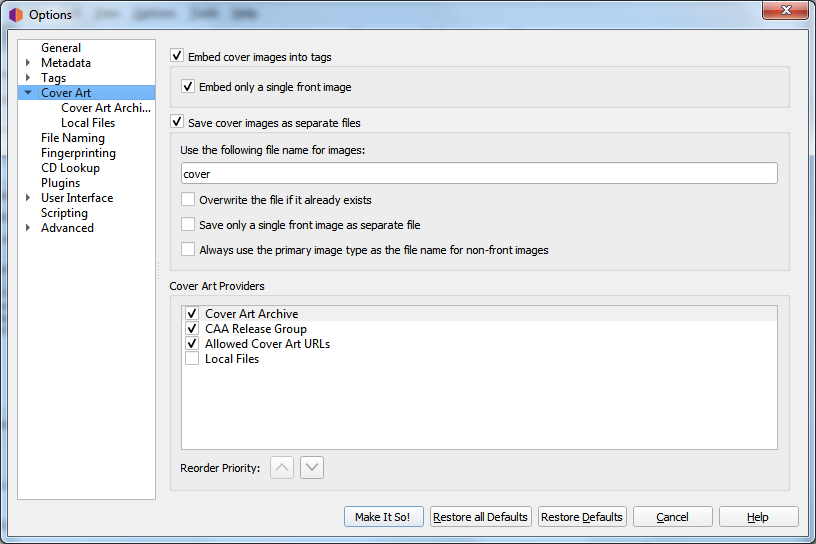

Cover Art Providers¶
{kind=link}
Picard can download Cover Art from a number of sources, and you can choose which sources you want Picard to use. You can activate more than one provider and choose the order in which the providers are queried. Picard will try the providers from top to bottom until an image is returned.
Cover Art Archive: Release
The Cover Art Archive (CAA) is the MusicBrainz archive of cover art in cooperation with the Internet Archive. The Cover Art Archive is the most comprehensive database of cover art (e.g.: front covers, back covers, booklets, CDs).
Cover Art Archive: Release Group
This provider uses the Cover Art Archive cover image assigned to the release group. This is usually the image that best describes the release group as a whole or the image with the best visual quality, but is not necessarily the exact cover of the release you are tagging. This provider is a good choice if you care more about visual quality then having an exact representation of your release. It is also a good fallback for the Cover Art Archive provider.
Allowed Cover Art URLs
This will use images provided from approved third-party sites. The image location is stored as a URL relationship for the release within the MusicBrainz database, and only approved sites can be used for this relationship.
Note
This relationship type is now deprecated in MusicBrainz, and is no longer used. See Cover art whitelist in the Style Guide for more information.
Local Files
Load cover art from local files. The file names to load can be configured in the Local Files provider options.
In addition to the built-in cover art providers described above, additional cover art providers can be installed as plugins.
Amazon: Amazon often has cover art when other sites don’t, however while this art is almost always for the correct Artist and Album, it may not be the absolute correct cover art for the specific Release with which you have tagged your music. Note: The Amazon cover art provider was built-in in Picard 2.1.3 and earlier versions. For later versions it needs to be installed as a separate plugin.
fanart.tv: Uses cover art from fanart.tv, which focuses on cover art with high visual quality. This provider provides cover art representative for the release group and not the individual release.
TheAudioDB: Uses cover art from TheAudioDB, which focuses on cover art with high visual quality. This provider provides cover art representative for the release group and not the individual release.